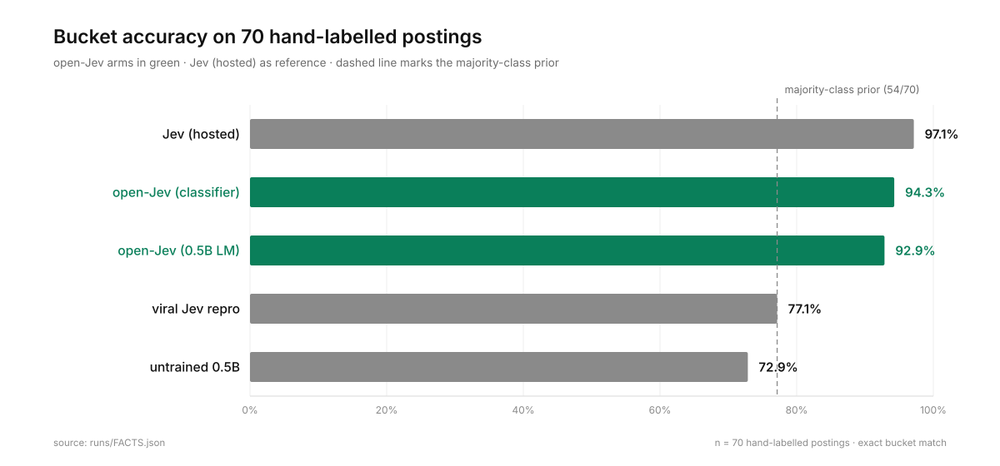
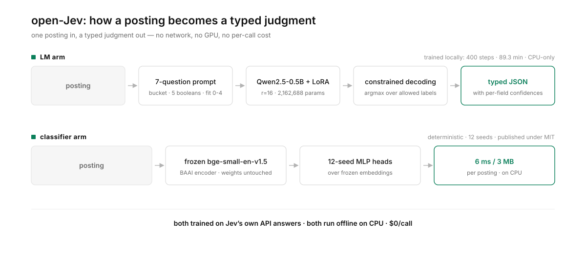

We measured the viral "Jev reproduction" on a hand-labelled benchmark: 77.1% — which is exactly the majority-class prior of that benchmark. So we trained the real thing, in the open, and published everything: paper, weights, corpora, harnesses, negative results, receipts.
Jev (TypeSafe) is a hosted model that answers seven typed questions about a piece of text — a category, five booleans, a five-point fit score, each with a probability. It is quiet infrastructure in my own pipeline: a watcher collects Saskatchewan job postings, Jev's answers reduce the pile to a worklist of things worth a human look.
A viral artifact claimed a stock 1.5B model plus a decoding trick "reproduces Jev". We tested it properly, on 70 hand-labelled postings: 77.1% bucket accuracy — identical to the rate you get by always answering the most common class (54 of 70). Its staff_role recall is 3/14, it misses both true service_lead rows, and its confidences are uninformative (Brier 0.359 vs Jev's 0.058). It reproduced the interface, not the judgment. Of its 16 local errors, 10 are technical employee seats read as plain jobs — Data Architect, Network Analyst, IT Senior Analyst.
So we spent one night doing the obvious next thing.


Unseen traffic: on 106 postings that arrived after training, the 0.5B adapter agrees with hosted Jev on 104/106 = 98.1% — both misses published, including one confident error. The 3 MB classifier scores 106/106 on the same set.
The LM arm. Qwen2.5-0.5B-Instruct + LoRA (r=16): 2,162,688 trainable parameters, 400 steps, batch 6, 89 minutes on six vCPUs with no GPU. Training targets are Jev's own API answers for 2,591 postings — under five cents of labelling — every label stored byte-for-byte and re-verified (13/13 checks: no leaks, gold set held out). Two independently written evaluation harnesses scored this run (the first against the step-386 snapshot, the second against the released adapter) and both returned 65/70 = 92.9%, with identical buckets on all 70 rows. Mean confidence 0.945 (Jev: 0.956).
The classifier arm. A frozen sentence encoder (bge-small) plus small heads, 12 seeds: 66/70 = 94.3%, 99.39% agreement with Jev across the full 2,631-posting production corpus, 3 MB of weights, 6 ms per posting, deterministic byte-identical reruns, no GPU, no torch at inference. It is already public at DECRUX9812/openjev.
| test | result | cost |
|---|---|---|
| 106 fresh postings, never seen, vs hosted Jev | 106/106 bucket agreement | $0 vs $0.0025 |
| 107-posting cross-region boundary slice | 104/107 (97.2%) | $0 vs $0.0041 |
| whole 2,844-posting archive, re-classified | 18 seconds, tier-stable | $0 |
They are the interesting part. Synthetic training corpora fail — class balance is behaviour, and a model trained on a majority-class-heavy corpus learns the majority class (0/2 on the rare class). Adding synthetic data to real data makes things worse (66 → 61/70 gold). A kNN blend over embeddings loses to plain heads. A 12× larger encoder buys nothing. The first overnight run's corpus had four gold rows sharing a (title, employer) pair with training data; we found it with an audit script, quantified it, and report the cleaned numbers alongside.
At $0 per call you stop budgeting questions and start reading everything. Our whole archive re-classifies in 18 seconds behind a cron line; the sweep asks questions that were never affordable per-row — repost patterns ("this employer has posted the same technical role every three weeks for a year"), week-over-week drift, employer rollups. Dark data: the archive you collected religiously and could never afford to read.
Millions of calls a month change from a budget line to a loop. The last 5% of judgment is still the interesting part — see the paper for where both arms fail, precisely.
Not Jev's weights. Not a leak. Not affiliated with or endorsed by TypeSafe. It is an independent workalike trained on answers obtained from their public API, for research, published under MIT because that seems like the honest thing to do. No hosted weights are redistributed. If you build on this, respect upstream terms. If you are TypeSafe and you object, say so and we will take it down.
# corpora are in the repo; verify labels are Jev's own answers python verify_corpus.py # expect: 13/13 checks # train the LM arm (6 vCPUs, no GPU, ~90 minutes) python train_v2.py --steps 400 # score it — two independent harnesses, expect 65/70 both python eval_openjev.py # A: parallel constrained decoding python eval_likelihood.py # B: staged whole-candidate scoring